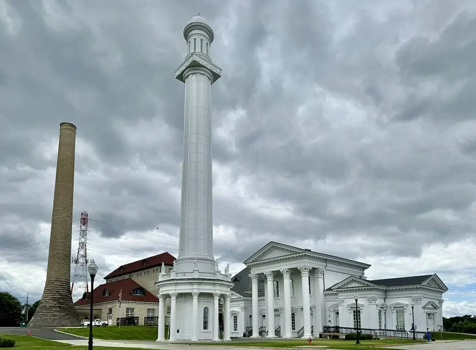
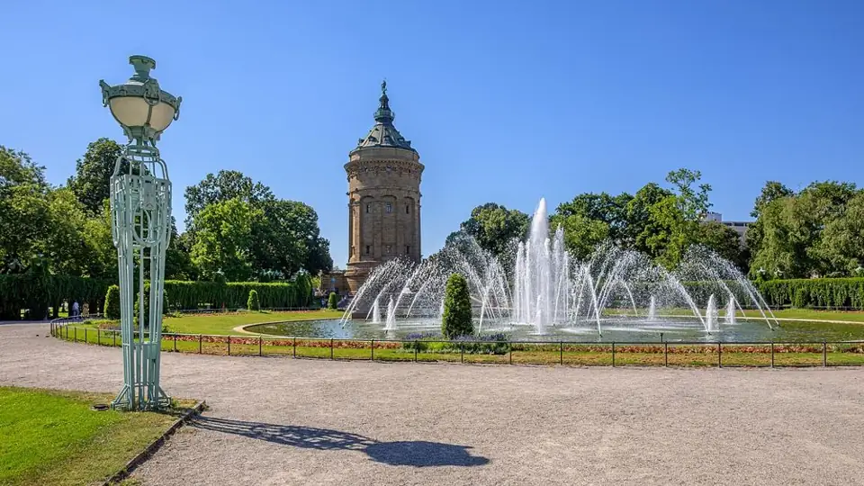
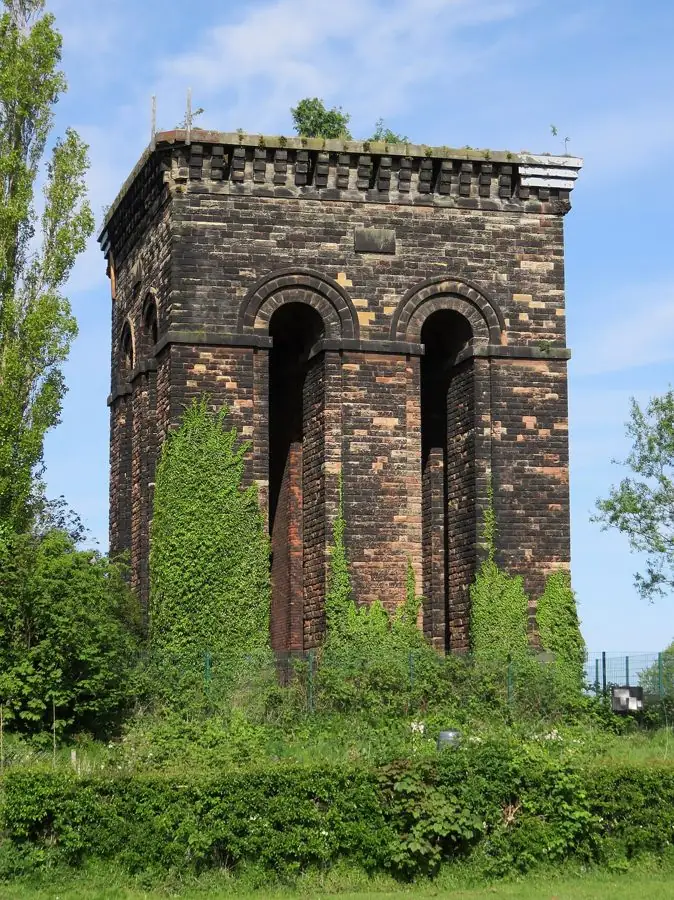
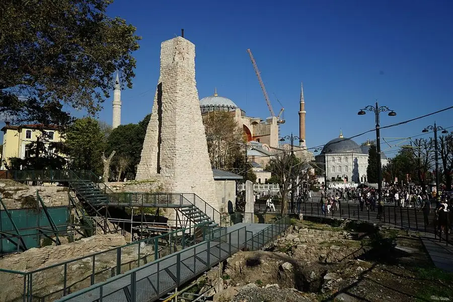
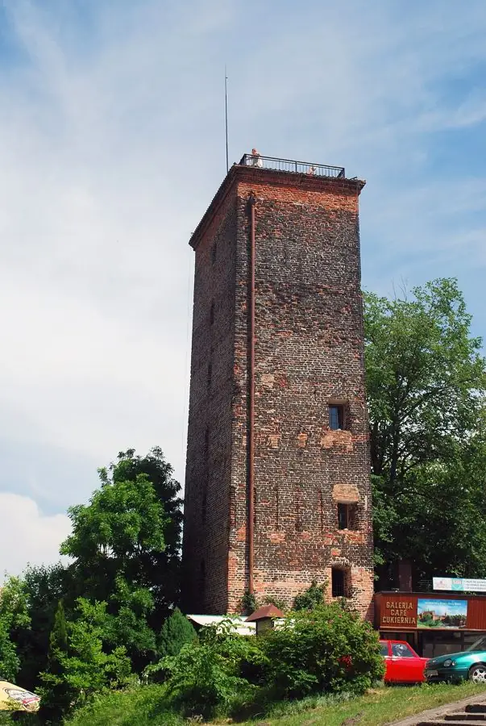
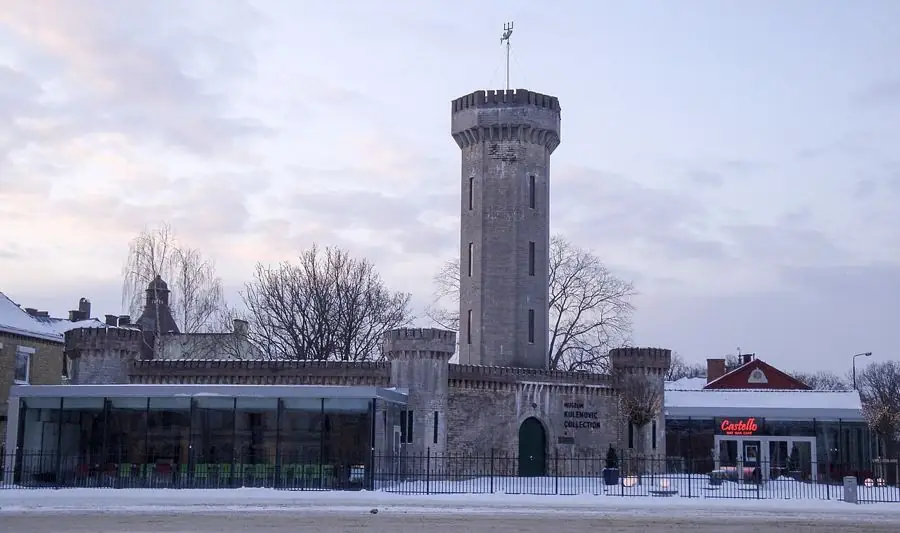
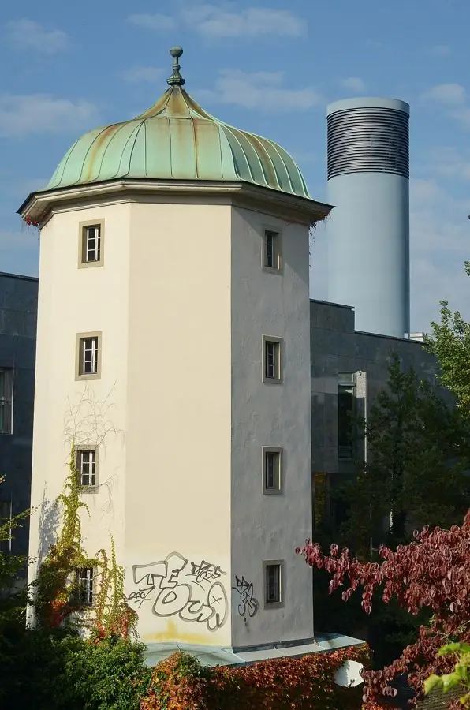

The Tower Speaks
So I decided to begin with my family tree. My ancestors are the lead tanks on masonry piers in Pompeii, Mimar Sinan’s stone “water balances” in Istanbul, the Water Tower of Frombork, Peter Morice’s wheels beneath London Bridge, Shukhov’s steel lattices in Mykolaiv, the brick “castles” of Mannheim and Hamburg. Some of them still work; others have become museums, hotels and memorials; some have vanished without a trace.
In this text I speak in the first person only here and at the opening of each chapter. Everything else is a strict scholarly narrative: with references, with evidence-level marks, and with an honest “unknown” wherever documents are missing. I do not want to claim anyone else’s glory. I want to know the truth about my lineage.
This edition combines three layers of work. The first is the analytical study “IMWT World History Research 2026” (ed. 1.0) on ancient hydraulic systems, Augsburg, the testimony of sacred texts, military history and the criteria for the “oldest tower”. The second is the independent IMWT study (ed. 2.0, November 2026), which extended the chronology with early-modern water-lifting systems, the industrial towers of Europe and America, Ukrainian monuments and the biographies of architects and engineers. The third is the historical survey “The Oldest Surviving Water Towers: 9 Countries” (November 2026), which forms Part II of this edition.
Edition 3.0 omits information on water structures in the cities of the Russian Federation. References are consolidated into a single numbered bibliography, and every source carries an evidence-level mark. Discrepancies between sources are shown openly in the text. Organisational recommendations and programme proposals of earlier editions are not included: the text is purely descriptive and analytical.
Abstract
The study traces the history of tower-based water distribution from Roman Pompeii at the end of the 1st century BC to the modernist and post-industrial structures of the 20th–21st centuries. The water tower is examined simultaneously as an engineering mechanism (hydrostatic head, storage, regulation), as an architectural object (style, composition, urban landmark) and as a carrier of collective memory (wars, disasters, museumification). Particular attention is paid to individuals: from Vitruvius and Mimar Sinan to Otto Intze, Vladimir Shukhov, Hans Poelzig, Eduardo Torroja and Sune Lindström. A separate chapter is devoted to the Ukrainian context — Kyiv, Lviv, Zhytomyr, Vinnytsia, Mykolaiv and the mass-produced rural towers of the 20th century. Part II offers a comparative survey of the oldest surviving towers of England, Ukraine, Türkiye, France, the Netherlands, Poland, Sweden, Switzerland and Norway. The edition closes with a chapter on the place of the Mala Vilshanka tower within this typological system.
Keywords: water tower; castellum aquae; su terazisi; hydrostatic head; Intze tank; hyperboloid structure; industrial heritage; adaptive reuse; Mala Vilshanka; IMWT.
Key findings
- Tower-based water distribution is reliably attested at least from Roman Pompeii, where most of the secondary water towers are dated to approximately 20–10 BC. [1–3]
- Between antiquity and the industrial age there was a continuous, though non-linear, tradition: the Augsburg towers from 1416, the Istanbul su terazileri of the 16th century, the Water Tower of Frombork (1571) and the water-lifting machines of Toledo (1569) and London (1582). [4–12]
- The 19th century turned the tower into a serial engineering type; the key turning points were the Intze tank (1880s) and Shukhov’s hyperboloid lattice (from 1896). [13, 14]
- Ukraine has its own significant layer of this history: the first Kyiv waterworks (1872), the Lviv exhibition tower (1894), the Zhytomyr tower (1898), Artynov’s tower in Vinnytsia (1911–1912) and Shukhov’s tower in Mykolaiv (1907). [15–19]
- The oldest surviving structures with a water-tower function in the nine countries surveyed date from the 16th century (Istanbul, Frombork) to 1889 (Norway); the municipal water tower in the modern sense appears in France in the 1820s and spreads widely from the 1850s. [10, 20–23]
- For the Mala Vilshanka tower, the date, designer and original client have not been documented; its place in history can be defined only typologically, not biographically.
Subject, terminology and methodology
In the narrow modern sense, a water tower is a free-standing tall structure with a reservoir raised above the level of the network to create hydrostatic pressure, smooth out daily fluctuations in consumption and provide a water reserve. For the history of technology it is useful to extend the concept to tower-type distribution structures (Roman secondary towers) and to towers with water-lifting machines that delivered water to elevated reservoirs. [1–3]
| Type | Function / inclusion criterion |
|---|---|
| Tower with an elevated tank | Water reserve, pressure, gravity flow; the main type of the 19th–21st centuries. |
| Roman distribution tower | Upper lead tank on a pier, a hydraulic node of the urban network; historical type. |
| Ottoman su terazisi (“water balance”) | An open pillar-tower that limits pressure in ceramic pipes and distributes the flow; historical type. |
| Water-lifting tower | A mechanism (wheel, horse gear, later a steam pump) raises water to a reservoir; historical type. |
| Aqueduct, cistern, well, castellum | Related infrastructure; not automatically called a water tower. |
Evidence scale
Every key statement in the text and in the chronological table is related to a scale: A — primary source or field archaeology; B — peer-reviewed scholarly work; C — official museum, archival or heritage-protection materials; D — secondary popular account, reference or journalistic information. Dates of construction, alteration and reconstruction are recorded separately, because many “historic” towers in their present form are the result of later restorations. The evidence level of each source is also given in the bibliography.
The first-person narrative (the voice of the Mala Vilshanka tower) is used as a literary frame at the beginning of chapters. It is not a source of facts and contains no statements that are absent from the scholarly part.
Prehistory: water before the tower
The first water reservoirs, wells, canals and cisterns appeared long before tall towers. The historical sequence was not linear: storing water, transporting it, lifting it mechanically, accumulating it at height and controlling its distribution existed in parallel in different civilisations.
The technological novelty of the water tower itself lies in the combination of height and a piped network. Height creates head, which makes it possible to deliver water from a single storage point to many users without a separate mechanism at each point of consumption. This principle — “height as stored energy” — is the common denominator of all the structures discussed below.
Antiquity: Pompeii, Nîmes, Vitruvius
Pompeii: the first reliably attested tower network
In Pompeii an external aqueduct delivered water to the main distribution node, the Castellum Aquae near the Vesuvius Gate. From there three trunk pipelines fed the upper lead tanks of the secondary water towers. Water could pass in sequence between towers at lower elevations and branch off to fountains, baths and private houses; this is described in detail in Richard Olsson’s work of 2015 and 2024. [1, 2]
An engineering study applying operational modal analysis to the ancient towers describes 14 known secondary towers and 13 surviving structures, with most probably built around 20–10 BC; some were rebuilt after the earthquake of AD 63. Surviving piers are not the same as surviving complete ancient tanks. [3]
| System component | Engineering purpose |
|---|---|
| Aqueduct | Delivering water to the highest point of the urban system |
| Castellum Aquae | Primary distribution on the main line |
| Raised lead tanks on towers | Local hydraulic node, limiting and equalising pressure |
| Fountains, baths, homes | Final consumption |

Nîmes: the castellum divisorium and the Pont du Gard
The second key ancient witness is the distribution basin (castellum divisorium) in Nîmes (ancient Nemausus, France). The aqueduct, about 50 km long and including the famous Pont du Gard, was built around AD 40–60; the bridge itself has three tiers of arches and a height of 48.8 m. [24] Water entered an open circular basin about 5.5 m in diameter and about 1 m deep, from which pipes carried it to the districts of the city. [24] The Nîmes castellum is not a tower, but it is a rare surviving example of the first level of the same hierarchical principle as in Pompeii: “main node — secondary nodes — consumer”.
Vitruvius: written testimony from the 1st century BC
In his treatise “De architectura” (Book VIII, ch. 6), Vitruvius describes water supply by channels or pipes and the division of the urban flow in three directions — to public fountains, baths and private houses. This is technical evidence of the principles of centralised distribution, but not an unambiguous description of a separate tall tower with a tank. [25, 26]
Sacred texts and the sacred architecture of water
The Biblical tradition and the hydraulics of Jerusalem
2 Kings 20:20 and 2 Chronicles 32:30 mention a pool, a conduit and the diversion of the Gihon spring under King Hezekiah (8th century BC). Isaiah 22:9–11 describes pools and works near the city walls. These texts link water with defence, but contain no unambiguous technical description of an elevated reservoir. [27, 28]
The Islamic tradition: a tower is not always a water tower
In the Qur’an (28:38) Pharaoh orders a tall tower to be built, but its purpose is unrelated to water supply; the translation variants “tower”, “lofty structure” and “palace” call for textual caution. [29] At the same time, Islamic civilisation gave the world one of the most refined tower systems — the Ottoman su terazileri (see Chapter 05).
An Indian counterpoint: architecture going downward
Rani-ki-Vav in Patan (11th century) is a monumental stepwell that UNESCO describes as an inverted temple of water. It is not a water tower, but it is a compelling example of how another culture embodied the sacred meaning of hydraulic engineering in architecture. [30]
A selective check of key passages of the Bible and the Qur’an found no reliable direct mention of a water tower. This is not the same as claiming that no such mention exists in any sacred book of the world: that would require a separate multilingual textual search.
The Middle Ages and early modern period: Augsburg, Istanbul, Frombork, Toledo, London
Augsburg: Germany’s oldest surviving complex (from 1416)
UNESCO documentation on Augsburg notes that the early history of water towers is insufficiently studied: other towers are known in Germany before 1416, but they have not survived. [6] The Great Water Tower at the Red Gate has a timber predecessor of 1416 associated with the master Hans Felber, a stone rebuilding of 1463 and a further heightening in 1669. The complex of three towers and water-lifting works operated until 1879. [5, 31] Water wheels drove pumps, the pumps delivered water to elevated reservoirs, and from there it flowed by gravity. UNESCO inscribed the Water Management System of Augsburg on the World Heritage List in 2019. [4] The nomination dossier cautiously calls the Great Tower probably the oldest surviving one in Germany — but not in the world. [6]

Istanbul: Mimar Sinan and the su terazileri (1554–1564)
The chief architect of the Ottoman Empire, Mimar Sinan (c. 1490–1588), rebuilt and designed the Kırkçeşme water supply system for Suleiman the Magnificent; its construction is dated 1554–1564 (other sources: 1555–1563/64). The TDV encyclopedia calls this system Sinan’s most important engineering work and his largest in scale. [9, 20, 32] The system was about 55.3 km long, collected surface water in the Belgrade Forest area and included 33 aqueducts as well as intakes and settling tanks; the best known is the two-tier Maglova aqueduct. [7] Even in the driest months the Kırkçeşme system delivered about 4,200 m³ of water per day to 158 points — public fountains, wells, watering places, baths and palaces. [9]
The engineering core of the urban section was the su terazileri — the “water balances”. Because the ceramic pipes (künk) withstood pressure poorly, water was raised into an open tower with a small basin: the pressure in the pipe under the street was limited by the water level in this basin, while calibrated outlets (lüle) at the top of the tower divided the water among directions. [8] The su terazisi thus combines the functions of a Roman distribution tower and a modern pressure regulator. Surviving towers of this type can be seen, for example, near Hagia Sophia and near the Şehzade Mosque (see section 12.3). [9]
Frombork, 1571: a water tower on Polish lands
In 1571 a brick water tower was built over the town canal in Frombork, incorporating the lower parts of the walls of an older mill. Inside it worked a bucket water-lifting device driven by a water wheel, made by the Wrocław pipe-master Valentin Hendel; water from the tank at the top flowed by gravity through pipes of hollowed oak trunks to Cathedral Hill. Poland’s National Heritage Board calls it the first structure of this kind on Polish lands. [10] See section 12.6 for details.
Toledo: Juanelo Turriano and the “Artificio” (1565–1569)
The clockmaker and mechanic Giannello della Torre (Juanelo Turriano; born in Cremona c. 1500–1511, died 1585 in Toledo) signed an agreement with the city of Toledo in 1565 to build a machine to raise water from the river Tagus. [12] The first “Artificio” began working in 1569 and delivered more water than expected; a second was commissioned in 1581. [12] Driven by the current of the river itself, the mechanism lifted water about 90 m up to the Alcázar — the highest point of the city. [33] According to scholarly reconstructions, the water rose through a sequence of buckets and transfer mechanisms along an inclined “ladder” of timber structures; no detailed drawings by the author himself have survived. [33]
London: Peter Morice and the wheels under London Bridge (1581–1822)
Peter Morice (d. 1588), an engineer of Dutch (by other accounts, German) origin, leased the northern arch of London Bridge in 1581 for 500 years at a nominal ten shillings a year and installed under it a current-driven wheel with force pumps. [34] The first water reached London houses on Christmas Eve 1582 — considered the beginning of the city’s mechanical water supply. [11] The wheels were destroyed by the Great Fire of London in 1666 but rebuilt; by the mid-18th century the system had five wheels in three arches and 64 pumps, and in 1822 it was dismantled by Act of Parliament because it endangered navigation. [11]
Grudziądz, 1656: a tower within a fortification system
A peer-reviewed article in “Water History” points to a hydraulic structure near the town walls of Grudziądz (Poland), shown in a historical drawing from the Swedish siege of 1656; the authors state explicitly that its role in combat and its later condition remain unknown. [35]
17th–18th centuries: monastery, estate, private waterworks
Small towers serving individual complexes survive from the 17th–18th centuries: the water tower of Rolduc Abbey in Kerkrade (1671, Netherlands), English estate towers (for example, Aske Park, mid-to-late 18th century) and the private tower with a water wheel on the Schanzengraben in Zurich (1724). [36–39] They are discussed in detail in Part II.
The industrial age: the city, the railway, the Intze tank
In the 19th century the demand for a stable water supply grew together with industry, sanitary infrastructure, fire protection and the expansion of the railways. A Historic England overview notes that railway water towers have existed almost since the beginning of the railways: typically a stone or brick base with an iron tank, sometimes with a pump inside; until the 1860s water for locomotives was one of the key constraints on railway traffic. [40]
Louisville, 1860: “the most elegant waterworks in the country”
The Louisville Water Tower (Kentucky, USA) opened together with its pumping station on 16 October 1860; the tower is 185 feet (about 56 m) high. [41, 42] The complex was designed by the Louisville Water Company’s chief engineer Theodore R. Scowden (1815–1881) and his assistant Charles Hermany, whose names are inscribed on a plaque at the base of the tower; the common attribution to the architect Gideon Shryock is mistaken. [43] The classical design was not merely aesthetic: the company wanted to persuade citizens to use the waterworks. After a tornado destroyed it in 1890 the tower was rebuilt, so its present appearance is not an unchanged structure of 1860. [41, 42]
Chicago, 1869: the tower that survived the fire
The Chicago Water Tower was designed by the architect William W. Boyington (1818–1898) in 1869; it enclosed a tall standpipe and, together with the pumping station, formed part of the city’s water supply system. [44] During the Great Chicago Fire of 1871 the tower and the pumping station survived because they were built of limestone with a minimum of timber, and they became a symbol of the city’s rebirth; the idea that it was the only surviving building is a myth. [45]


Mannheim, 1886–1889: the tower as a city square
The 1885 competition for Mannheim’s water tower was won by the young architect Gustav Halmhuber (1862–1936); the tower was built in 1886–1889. [46] The reservoir was commissioned in 1888, and in 1889 a statue of Amphitrite was placed on top; in 1943–1945 the tower suffered war damage. [46] About 60 m high and 19 m in diameter, the structure became Mannheim’s first municipal water tower and is still the symbol of the city. [46]
Otto Intze: the tank that freed the shaft
Otto Intze (1843–1904), professor at the Technical University of Aachen, proposed a new type of reservoir for water towers in the 1880s. [13] The bottom of the tank was secured by a ring anchor (Ringanker) of iron or steel so that only vertical, not horizontal, forces were transmitted to the shaft; as a result the brick shaft could be made lighter. [13] Intze I (with a concave bottom) and Intze II (with a convex bottom) tanks are distinguished; this type was used massively in Germany from about 1885 to 1905. [13] A study of the architecture of Riga’s water towers shows that the tanks of all four Riga towers of the late 19th and early 20th centuries are of the Intze II type. [13] The Intze tank became the technical basis for thousands of brick towers in Central and Eastern Europe — the same typology to which the Mala Vilshanka tower visually belongs.
Hamburg, 1907–1910: Europe’s largest tower
The competition for the water tower in the Sternschanze park attracted 135 entries; in 1907 it was won by Wilhelm Schwarz, architect of the Hamburg waterworks. [47] The octagonal brick tower, about 60 m high, was built in 1907–1910; when completed it was the largest water tower in Europe, and it operated until 1961. [47] After decades of decline it was converted into a hotel (opened in 2007); the conversion was accompanied by fierce protests from local residents, which makes it an important case in the public debate about the fate of industrial heritage. [47]


Frank Lloyd Wright, 1896: “Romeo and Juliet”
Even the masters of 20th-century architecture began with water-lifting towers. In 1896 the young Frank Lloyd Wright designed, at the request of his aunts, a timber wind-powered water-lifting tower for the Hillside Home School in Wisconsin, completed in 1897. [48] Wright named the two interpenetrating parts of the structure — a lozenge and an octagon — “Romeo” and “Juliet”: the first takes the wind load, the second contains the stair and a viewing balcony. [48] The tower is a US National Historic Landmark (1976), was restored in 1992 and no longer pumps water. [48]

Shukhov’s hyperboloid: a structural revolution
In the 1890s the engineer Vladimir Shukhov (1853–1939) developed a steel lattice structure in the form of a one-sheet hyperboloid of revolution. The hyperboloid is formed by straight bars inclined to the axis; such a lattice combines high rigidity with low consumption of metal and can carry a heavy tank at the top. [14]
According to the comparative study by Matthias Beckh, the early hyperboloid water towers of Shukhov include Lysychansk (1896), Mykolaiv (1907) and Kharkiv (1912); another surviving tower of this type in Ukraine stands in Cherkasy (1914). [14, 49] The idea of the hyperboloid lattice later influenced the structural explorations of Eduardo Torroja and other 20th-century engineers (see Chapter 09). [14, 50]
Mykolaiv, 1907

The question of building a water tower in Mykolaiv arose in 1904; the first design was by Viktor Weber, author of the city waterworks. [19] Instead, Shukhov’s hyperboloid tower was built, its erection completed in January 1907; an Intze-type tank was installed on it, and on 15 March 1907 the tower was connected to the city network. [19] According to popular sources, whereas Shukhov’s first towers held 27,000–100,000 litres of water, the Mykolaiv tower held up to 600,000 litres. [19] D The combination of two innovations — Shukhov’s lattice and the Intze tank — makes the Mykolaiv tower a key monument in the world history of water towers. Recent publications record significant corrosion of the structure. [19]
Water towers of Ukraine
Kyiv, 1872–1876: the first centralised waterworks
The first stage of Kyiv’s municipal waterworks was ceremonially opened on 1 March 1872 on the site of today’s Khreshchatyi Park. [15] Two water towers were built to the design of the architect Oleksandr (Adrian) Schiele: the first in 1871–1872 (dismantled in 1939–1940), the second, 29 m high, in 1875–1876; the second survived and in 2003 was reconstructed from the original drawings, including its fire lookout, while the first was recreated at the same time. [15, 51] Since then they have housed the Water Information Centre (“Water Museum”), opened on 24 May 2003 within a Ukrainian–Danish project; the main exhibition is located in a former underground reservoir of 1909. [15] It is the oldest existing municipal water tower in Ukraine (see section 12.2).
Dnipro, 1884: a railway tower
Near Dnipro railway station stands an octagonal six-storey water tower about 36 m high, which reference sources date to 1884; it supplied water to the station, depot, workshops and nearby housing. [52] D The date requires archival confirmation.
Lviv, 1894: the tower of the Provincial Exhibition
The water tower in Stryiskyi Park was built for the Galician Provincial Exhibition of 1894; it was styled as a medieval tower, but built for entirely practical reasons — the exhibition grounds had no water sources of their own for fountains, boilers, restaurants and agricultural displays. [16] The sketch was made by the architect and professor Julian Zachariewicz, the design was developed by Michał Łużecki, and construction was carried out by Józef Balaban and Volodymyr Pidhoretskyi. [16] For a long time the tower stood unused; in 1976 a café opened in it, and it was later declared an architectural monument of local significance. [16]
Zhytomyr, 1895–1898: pressure regulator and fire lookout
The foundation stone of the Zhytomyr water tower and pumping station was laid in August 1895; the 31-metre tower, designed by the local architects Arnold Jensch and Mieczysław Librowicz, was ceremonially opened on 27 December 1898. Two tanks with a total volume of 200 m³ were installed at the top; the tower also served as a fire lookout. [17] It was used as a water tower until 1965; in 1984 a café opened in it, and in 1996 it was listed as an architectural monument of local significance. [17]
Vinnytsia, 1911–1912: Artynov’s tower
According to the proceedings of a Vinnytsia National Technical University conference, Vinnytsia’s water tower was built between March and November 1911 (several reference sources give 1912) to the design and under the supervision of the city architect Hryhorii Artynov; it also served as a fire lookout. [18] The octagonal brick structure has seven tiers and is 28 m high; it served as a water tower until 1920, was used as an observation post during the Second World War and as housing after the war. [18] Since 1985 it has housed a museum; it is a monument of local significance (1983) and part of Vinnytsia’s civic symbolism. [18]


Mykolaiv (1907), Kharkiv (1912), Cherkasy (1914)
See Chapter 07. These structures belong to Shukhov’s series of hyperboloid towers. [14, 19, 49]
The mass-produced rural tower of the 20th century: the Rozhnovsky type
From the mid-20th century a standardised steel tower type with a cylindrical tank on a tubular support spread through the rural and railway infrastructure of the USSR, including Ukraine; it is known as the “Rozhnovsky tower”. Reference sources link its development to the engineer O. A. Rozhnovsky (1936) and point to its rapid erection and the absence of any need for heating; primary patent and design documents were not verified within this study. [53] D It was this standardised steel tower that gradually displaced brick towers like the one in Mala Vilshanka from the rural landscape.
Adaptive reuse of Ukrainian towers
A study at the Kyiv National University of Technologies and Design (I. Antonenko) analyses the conversion of engineering structures based on water towers in Ukraine, citing Vinnytsia, Lviv (1894) and Zhytomyr (1898) as examples, and stresses separately the importance of small towers of simple construction in villages and small towns as markers of local identity. [54]
Modernism and the 20th century: from Expressionism to “mushrooms”
Hans Poelzig, Poznań, 1911
For the East German Exhibition of 1911 in Posen (now Poznań), the German architect Hans Poelzig (1869–1936) designed the Upper Silesian Tower, about 51 m high — a heptagonal steel-frame structure with brick infill that later became a water tower. [55] The building is considered an early monument of architectural Expressionism; only its foundation survives, which became the base of today’s “Iglica” tower on the Poznań International Fair grounds. [55] Architectural historians also regard the tower as part of the city’s complex German–Polish memory. [55]
Eduardo Torroja: brick, concrete and the hyperboloid
In 1941 the Spanish engineer Eduardo Torroja (1899–1961) built the reservoir tower of the Zarzuela Hippodrome in Madrid of reinforced brick in the form of a hyperboloid of revolution — a visual forerunner of later reinforced-concrete cooling towers. [50] In 1956 he designed a water tower at Fedala (now Mohammedia, Morocco), 35 m high with a capacity of 3,500 m³ — a shell in the form of an inverted truncated cone on a ring of reinforced-concrete supports, in which prestressing of the wall was meant to counteract tension from the water pressure and prevent cracking. [50]
Sune Lindström and Malene Bjørn: from Örebro to Kuwait
The Swedish architect Sune Lindström (1906–1989), a graduate of the Royal Institute of Technology who also studied at the Bauhaus, designed with Poul Kyhl, for the firm VBB, the “Svampen” (“The Mushroom”) water tower in Örebro (Sweden), opened in May 1958; it is 58 m high, holds 9 million litres and has a café and viewing platform at the top. [56] D Svampen is considered the first of the modern Swedish “mushroom” towers. [56]
In 1965 the Government of Kuwait commissioned VBB to develop the capital’s water supply system; the firm built five groups of “mushroom” towers — 31 structures, each with a capacity of 3,000 m³, completed in 1976. [56] The sixth group — the three Kuwait Towers — was designed by the Danish architect Malene Bjørn; the main tower, 187 m high, opened to visitors on 1 March 1979. [56] The “Water Towers” complex was among the first winners of the Aga Khan Award for Architecture (1978–1980 cycle). [56]
Vukovar, 1963–1968
The water tower of Vukovar (Croatia), 50.33 m high, was built in 1963–1968 to the design of Petar Kušan and Sergej Kolobov. [57] Its fate in 1991 is discussed in Chapter 10.


Towers in wars and disasters
The histories of water towers and wars intersect in typical situations: supplying water to a besieged city; using a tall structure for observation; destroying water infrastructure as a means of pressure on the population. Each episode requires evidence for the specific tower concerned.
| Place / date | Link to war or disaster | Evidence level and limits |
|---|---|---|
| Jerusalem, 8th century BC | Defensive control of the water supply under King Hezekiah [27] | Textual evidence; not a tower |
| Grudziądz, 1656 | A hydraulic structure near the walls in a drawing of the Swedish siege [35] | B; role in combat not proven |
| Chicago, 1871 | Boyington’s tower survived the Great Fire and became a symbol of the city’s rebirth [45] | C |
| Mannheim, 1943–1945 | War damage to Halmhuber’s tower, emergency repairs [46] | C |
| Zhytomyr, 1941–1943 | Tower used by the occupying forces as an aircraft observation post [17] | D; archival confirmation needed |
| Vinnytsia, 1941–1944 | Artynov’s tower used as an observation post [18] | D; archival confirmation needed |
| Rocherath, 1944–1945 | Tower as an observation post during the Ardennes Offensive [58] | D; war diaries needed |
| Vukovar, 1991 | 640 direct hits; the tower survived and became a memorial [57] | C; confirmed by the official memorial |
| Kuwait, 1990 | After the Iraqi invasion the Kuwait Towers were disconnected from the water system [56] | D |
Vukovar shows how a utilitarian tower can become a memorial after a war without erasing the traces of a traumatic history: the structure has kept its battle damage and today functions as a memorial cultural site. [57]
The tower as image: photography, typology, new life
Bernd and Hilla Becher: “anonymous sculptures”
From the late 1950s the German photographers Bernd (1931–2007) and Hilla (1934–2015) Becher systematically photographed industrial structures — water towers, blast furnaces, gasholders, grain elevators. [59] The monograph “Wassertürme” (Schirmer/Mosel, 1988; English edition “Water Towers”, MIT Press, 1988) contains more than 220 photographs of towers grouped by similarity of form, with texts by Reyner Banham and Weston Naef. [59] The Bechers photographed frontally, against a neutral grey sky, without people, and presented the images in grid “typologies” in which each tower becomes a variation of an ideal form while retaining its individuality. [59] This method effectively laid the visual foundation for the modern cataloguing of water towers.
Adaptive reuse: from museum to hotel
| Tower | Original function | New life |
|---|---|---|
| Louisville (1860) | Standpipe tower of the city waterworks | WaterWorks museum complex [43] |
| Kyiv (1876) | Tower of the first waterworks | Water Information Centre, since 2003 [15] |
| Lviv (1894) | Water supply for the exhibition | Café since 1976, restaurant [16] |
| Vinnytsia (1911) | Waterworks and fire lookout | Museum since 1985 [18] |
| Hamburg (1910) | Europe’s largest tower | Hotel since 2007 (amid protests) [47] |
| Vukovar (1968) | Municipal water tower | Memorial of the 1991 war [57] |
| Örebro (1958) | Working water tower | Combines its function with a viewing platform and café [56] |
These examples illustrate two trajectories: preserving the engineering function while adding public space (Örebro, Kuwait), and full conversion with loss of function (Hamburg, Kyiv, Vinnytsia). In each case questions arise about authenticity, accessibility, fire safety and public consensus.
The oldest surviving towers: criteria and a survey of nine countries
The world dimension: what is actually confirmed
| Criterion | Candidate | What is actually confirmed |
|---|---|---|
| Oldest remains of a tower network | Pompeii, Italy | Ancient tower piers, late 1st century BC [3] |
| Oldest surviving aqueduct distribution node | Nîmes, France | Castellum divisorium, mid-1st century AD (not a tower) [24] |
| Early intact historic tower | Augsburg, Germany | Complex with phases of 1416, 1463, 1669 [5, 6] |
| Oldest surviving regulating towers | Istanbul, Türkiye | Su terazileri of Sinan’s system (1554–1564) and later systems; dating of individual towers needs verification [8, 9, 60] |
| Oldest ornamental tower in the USA | Louisville, USA | 1860, rebuilt after 1890 [41] |
| Absolutely the oldest in the world | Not established | An intercontinental audit is required |
The UNESCO nomination document cautiously describes Augsburg’s Great Tower as probably the oldest surviving one at least in Germany; extending this wording to world primacy would be incorrect. [6] The correct answer depends on the criteria: date of original construction; degree of preservation of historic structures; presence of a reservoir; authenticity of the hydraulic function; periods of alteration; independent dating; availability of primary materials.
The national dimension: purpose, criteria and limits
Part II answers the question: which water tower is the oldest surviving one in each of nine countries — England, Ukraine, Türkiye, France, the Netherlands, Poland, Sweden, Switzerland and Norway? For each country it gives the main object, its key data, a short historical note, a photograph and a list of other contenders.
“The oldest tower” is a matter of criteria, not of a single name. Each section therefore distinguishes three categories:
- the oldest surviving structure with a water-tower function — including estate, monastic and fortress towers with mechanical water lifting (16th–18th centuries);
- the oldest surviving tower of a municipal (public) waterworks — as a rule, mid- to late 19th century;
- structures that are merely called “water towers” but never had a water-supply function (for example, the Wasserturm in Lucerne) — listed to avoid confusion.
Every statement is given a source and an evidence level on the scale of Chapter 01: A — primary source; B — peer-reviewed scholarly or encyclopaedic publication; C — official heritage register, state, municipal or museum body; D — secondary reference, tourist or media source. Where sources contradict each other, the contradiction is shown openly.
Summary table
| Country | Object | Date | Type / status |
|---|---|---|---|
| Poland | Water Tower (Wieża Wodna), Frombork | 1571 | Tower with mechanical water lifting |
| Türkiye | Su terazileri of the Kırkçeşme system, Istanbul | 1554–1564* | Regulating towers; *date of the system |
| Netherlands | Water tower of Rolduc Abbey, Kerkrade | 1671 | Monastic tower |
| Switzerland | Wasserturm Schanzengraben, Zurich | 1724 | Private tower with a water wheel |
| France | Château d’eau, Toulouse | 1823–1825 | Municipal tower with pumps |
| England | Tower Hill Water Tower, Ormskirk | 1853–1854 | Municipal tower |
| Sweden | Vattenborgen, Karlskrona | 1861–1863 | High reservoir of a municipal waterworks |
| Ukraine | Water tower in Khreshchatyi Park, Kyiv | 1875–1876 | Municipal tower; reconstructed 2003 |
| Norway | Water tower of Skotterud station | 1889 | Railway tower |
Tower Hill Water Tower, Ormskirk

The tower on Tower Hill was built in 1853–1854 for the local board of health — at a time when English towns, after the cholera epidemics, were introducing piped water supply on a large scale. Reference sources based on Historic England list entry no. 1197069 describe it as the oldest surviving water tower in the country. [22] D
The wording “reputed” matters: the English register contains other early towers. The Aske Park estate (North Yorkshire), for example, has an “old water tower” of the mid-to-late 18th century in dressed sandstone [38], and Leiston (Suffolk) has a brick tower with a cast-iron tank dated to about 1850 [61]. Ormskirk is therefore the oldest known surviving municipal water tower, while estate towers may be older.
Other contenders and reference points
Water tower in Khreshchatyi Park, Kyiv

The Kyiv tower of 1875–1876 is part of the first municipal waterworks, opened on 1 March 1872; its history is set out in detail in Chapter 08. The neighbouring tower of 1871–1872 was dismantled in 1939–1940 and recreated in 2003. [15, 51] D
The oldest existing municipal water tower in Ukraine is therefore the Kyiv tower of 1876, although its present appearance is the result of reconstruction. Some popular publications name the military engineer Amand Struve as its author and date the tower to 1871 [63]; this probably conflates information about the waterworks as a whole with that about individual structures, and the question requires archival verification.
Other contenders and reference points
| Object | Date | Comment |
|---|---|---|
| Railway tower near the station, Dnipro | 1884 | Octagonal, 36 m; data from a secondary source only [52] D |
| Tower of the Provincial Exhibition, Stryiskyi Park, Lviv | 1894 | Sketch by J. Zachariewicz, design by M. Łużecki; substantially altered [16, 49] |
| Water tower, Zhytomyr | 1895–1898 | Architects A. Jensch and M. Librowicz; 31 m, two 100 m³ tanks; local monument since 1996 [17] |
| Shukhov tower, Mykolaiv | 1907 | Steel hyperboloid with an Intze tank (Chapter 07) [19, 49] |
Su terazileri of the Kırkçeşme system, Istanbul

The Turkish tradition of water towers is distinctive: these are not reservoirs at height but regulating towers of gravity waterworks. In a su terazisi water rose into an open basin; the pressure in the ceramic pipes was limited by the water level in it, and calibrated outlets divided the water among directions. [64] The most accomplished system is considered to be the Kırkçeşme waterworks (see also Chapter 05), built by Mimar Sinan on the order of Suleiman the Magnificent in 1554–1564; the TDV encyclopedia calls it Sinan’s most important engineering work and his largest in scale. [20, 32] B
The earliest known su terazileri are described in Edirne: researchers mention a “Terazi Köşkü” of about 1530 in the palace on Sarayiçi. [60] Dated towers in Istanbul include the Saliha Sultan su terazisi in Eyüp (1736) [60] and the late Hamidiye su terazisi in Kağıthane (1899–1902) [65]. In total, 86 su terazileri have been recorded in Istanbul [66]. The sources used do not establish the exact date of the oldest of them, so “the oldest” here is the 16th-century type as a whole, not a single structure.
Other contenders and reference points
Château d’eau, Toulouse

The Toulouse château d’eau is one of the earliest examples in France of a true water tower: water from a filtering gallery was raised by pumps into the reservoir at the top, from where it flowed by gravity through the city. For over thirty years it supplied the people of Toulouse with clean water, until the filtering gallery silted up and the city built a second tower on the opposite bank. [21] C
In French, “château d’eau” denotes any reservoir structure, so older objects with this name are not always towers. The best-known example is the monumental hexagonal château d’eau on the Promenade du Peyrou in Montpellier (built from 1766, architect Jean-Antoine Giral, completed about 1768), the terminal distribution node of the Saint-Clément aqueduct, classified as a monument in 1954. [67]
Other contenders and reference points
| Object | Date | Comment |
|---|---|---|
| Château d’eau du Peyrou, Montpellier | 1766–1768 | Distribution pavilion of an aqueduct, not a tall tower; MH [67] |
| Château d’eau de Montmartre, Paris | 1835 | Octagonal tower with a reservoir; raised in 1865, the added storey removed in 1927 [68] |
| Reservoir towers of Versailles (rue des Réservoirs) | from 1665 | Park hydraulics; secondary data [69] D |
Water tower of Rolduc Abbey, Kerkrade

The national dataset “Watertorens” (based on the watertorens.eu inventory) counts 306 known surviving water towers in the Netherlands and states that the oldest of them dates from 1671. [37] This year corresponds to the former water tower of Rolduc Abbey: the description of the rijksmonument names the abbot’s wing of 1671 and “the former water tower, also of 1671” with a sundial. [36] C
Other sources name the tower of Soestdijk Palace (1680) as the oldest Dutch water tower, and the Den Helder tower (1856) as the oldest tower of a centralised drinking-water supply. [70] The 1856 tower was replaced by a new one in 1908, so among surviving municipal towers one of the oldest is the Watertoren in the De Esch district of Rotterdam (1871–1873, architect C. B. van der Tak, 48 m, rijksmonument since 1981). [71, 72]
Other contenders and reference points
Water Tower (Wieża Wodna), Frombork

The tower was built in 1571, incorporating the lower parts of the walls of an older mill. Inside it a water-lifting device driven by a water wheel and a distribution tank were installed, from which water flowed by gravity through pipes of hollowed oak trunks to the houses on Cathedral Hill. Poland’s National Heritage Board calls it the first structure of this kind on Polish lands and the second in Europe. [10] C
The system was repaired in 1630 and in the early 18th century. The waterworks was closed in 1778, the machinery dismantled in the mid-19th century, and the tower itself restored in 1964. [73] What survives, therefore, is the architectural shell, not the original mechanism. The comparison with Augsburg (“second after Augsburg, 1548”) is an established local formula; in view of the wider European history (Augsburg from 1416, Toledo 1569; see Chapter 05) it should be used with caution. [5]
Other contenders and reference points
Vattenborgen (“The Water Castle”), Karlskrona

Karlskrona became the third Swedish town with a waterworks (1864). It included a high reservoir on the main square — Vattenborgen, built by the navy in 1861–1863. It solved a 150-year-old problem for the town, which until then had lived on 146 wells and water shipped in from the mainland. [77, 78] C
Vattenborgen is a high reservoir in the form of a fortress rather than a tall tower. Among “classic” Swedish towers one of the first was the Kirseberg tower in Malmö (1879, 27 m) — the city’s first tower, converted into housing in 1916. [79]
Wasserturm Schanzengraben, Zurich

The tower was not part of the city fortifications. In the 1720s intensive building began in the Talacker quarter, but there was no public water supply yet, so the house owners built a tower with a water wheel and a reservoir for their own private waterworks. [39] D It is one of the earliest surviving examples of a true water tower in Switzerland.
Other reference points
Note: in mountainous Switzerland most reservoirs were placed underground at altitude, so water towers are comparatively rare. [83]
Water tower of Skotterud station

The tower at Skotterud station (1889) is considered the oldest surviving water tower in Norway; it is protected by the state and underwent antiquarian restoration in 2024 because of natural ageing, frost damage and lack of maintenance. [23, 84] D
Norwegian station towers usually had two or three storeys, a tank at the top and a stove on the ground floor. The oldest timber towers have not survived, and most masonry ones were demolished after the end of steam traction in the 1960s. [85] One source also names the tower at Bjørkelangen station as the oldest, but its dating is uncertain (probably around 1896). [85]
The Mala Vilshanka tower: what is established and what is not

What is established
- Location. The village of Mala Vilshanka — the administrative centre of the Mala Vilshanka hromada in Bila Tserkva district, Kyiv region. [87]
- Type and material. A free-standing brick tower of cylindrical volume; according to IMWT, its approximate height is about 15 m, with four levels inside.
- Condition (IMWT field photographic survey, 2026). Damaged roof; rotted timber floors; deterioration of the brick masonry with mortar washed out; destroyed window and door fillings; dense overgrowth of the surrounding area.
- Legal status. The property is owned by FishMi LLC; no information has been found on its inclusion in the State Register of Immovable Monuments of Ukraine.
What is not established
- the date of construction and phases of alteration;
- the designer, the construction organisation or the standard design used;
- the original client and function (estate, railway, industrial or collective-farm water supply);
- the type and material of the original tank, the equipment and the source of water supply;
- when the tower ceased to function as a water tower.
Typological position
Judging by its external features — a massive brick shaft with window openings on each tier and an upper reservoir volume — the tower belongs to the broad Central and Eastern European typology of brick water towers of the late 19th to mid-20th centuries, whose technical basis was often a metal tank resting on a masonry shaft (in particular on the Intze principle). [13] This statement is a typological hypothesis, not a dating: similar brick towers were built in both the pre-Soviet and the Soviet periods, and from the mid-20th century they were displaced in rural areas by standardised steel towers. [53]
A philosophical reflection: the architecture of reserve
The philosophical value of the water tower lies in its dual scale. Outwardly it is an object in its own right, an urban or rural landmark; functionally it is a node of a large invisible system that links the source, the lifting mechanism, the storage, the network, the consumers and the rules governing the resource.
From the Roman distribution tower to the Istanbul “water balances” and the Intze tank, one idea recurs: society gains stability through engineering foresight of future need. In this sense the water tower is an architecture of reserve and trust.
In modern engineering, similar tasks — redundancy, reliability, flow distribution, meeting peak loads — arise in electrical, telecommunication and digital networks. This is a strong comparative model, but not a proven direct historical lineage: where there are no documentary links, the comparison should be treated as a philosophical analogy.
Finally, the history of water towers is a history of people: mechanics to whom a city promised a lifelong pension (Turriano), engineers who risked their own capital (Morice), architects who won competitions at twenty-three (Halmhuber), and the nameless builders of thousands of rural towers whose names have yet to be found.
Conclusions
- The history of tower-based water distribution can be reliably traced at least to Roman Pompeii at the end of the 1st century BC; Vitruvius is an important written witness to the principles of urban water distribution, but not evidence of the first tall tower.
- Between antiquity and the 19th century there was continuity of two engineering principles — water-lifting (Augsburg, Frombork, Toledo, London) and regulating (Mimar Sinan’s Istanbul su terazileri) — which merged in the industrial water tower.
- The industrial age turned the tower into a serial type; the decisive technical innovations were Otto Intze’s tank and Vladimir Shukhov’s hyperboloid lattice, and the decisive architectural one was monumentalisation (Louisville, Chicago, Mannheim, Hamburg).
- In the 20th century architects discovered the reservoir as form: Poelzig’s Expressionism, Torroja’s shells, Lindström’s “mushrooms”, Malene Bjørn’s Kuwait Towers.
- Ukraine has its own significant layer of this history — from Kyiv’s 1872 waterworks to Shukhov’s 1907 tower in Mykolaiv — and at the same time thousands of little-studied rural towers.
- The military history of towers requires strict verification: the episodes of Vukovar, Grudziądz, Rocherath and Vinnytsia have different levels of evidence.
- “The oldest tower in the world” is a matter of criteria, not of a single name. The comparison of nine countries shows that the oldest surviving structures with a water-tower function — the su terazileri of Istanbul (from the 1550s), Frombork (1571), Rolduc (1671), Zurich (1724) — belong to the pre-industrial tradition; the municipal tower in the modern sense appears in Toulouse (1823–1825) and spreads widely from the 1850s (Ormskirk, Karlskrona, Rotterdam, Kyiv); in Norway the oldest surviving tower is a railway tower (1889).
- In almost every country the formula “oldest tower” is debatable: the result depends on whether estate, monastic and railway structures are counted, and on the completeness of the national inventory. In Ukraine early railway and provincial towers are insufficiently studied, which underlines the need for a national register of water towers.
- The Mala Vilshanka tower belongs to the broad typology of brick water towers of the late 19th to mid-20th centuries; its date, designer and original function have not been documented.
Chronological table
| Date | Event | Level | Source |
|---|---|---|---|
| 8th c. BC | Hezekiah’s conduit and pool in Jerusalem (textual tradition) | A (text) | [27] |
| 1st c. BC | Vitruvius describes the division of the urban water flow in three directions | A | [25] |
| c. 20–10 BC | Construction of most of Pompeii’s secondary water towers | B | [3] |
| c. AD 40–60 | The Nîmes aqueduct with the Pont du Gard and the castellum divisorium | B | [24] |
| AD 63 | Earthquake in Pompeii; some towers rebuilt | B | [3] |
| 11th c. | Rani-ki-Vav stepwell, Patan | C | [30] |
| 1416 | Timber predecessor of Augsburg’s Great Tower (master Hans Felber) | C | [5, 31] |
| 1463 | Stone rebuilding of the Great Tower, Augsburg | C | [5] |
| 1554–1564 | Mimar Sinan’s Kırkçeşme system, Istanbul | B–C | [9, 20, 32] |
| 1565–1569 | Juanelo Turriano’s first “Artificio”, Toledo | B–C | [12, 33] |
| 1571 | Water Tower of Frombork with V. Hendel’s bucket water-lifting device | C | [10] |
| 24.12.1582 | First water from Peter Morice’s wheels under London Bridge | C | [11] |
| 1656 | Hydraulic structure in a drawing of the siege of Grudziądz | B | [35] |
| 1666 | The Great Fire of London destroys Morice’s wheels (later rebuilt) | C | [11] |
| 1669 | Heightening of Augsburg’s Great Tower | C | [5] |
| 1671 | Water tower of Rolduc Abbey, Kerkrade (Netherlands) | C | [36, 37] |
| 1724 | Tower with a water wheel and reservoir on the Schanzengraben, Zurich | D | [39] |
| 1766–1768 | Château d’eau on the Promenade du Peyrou, Montpellier (arch. J.-A. Giral) | C | [67] |
| 1822 | Dismantling of the London Bridge water wheels | C | [11] |
| 1823–1825 | Château d’eau in Toulouse (arch. J.-A. Raynaud) | C | [21] |
| 1853–1854 | Tower Hill Water Tower, Ormskirk | D | [22] |
| 16.10.1860 | Opening of the Louisville Water Tower (T. Scowden, C. Hermany) | C | [41, 43] |
| 1861–1863 | Vattenborgen, Karlskrona (arch. F. W. Leijonancker) | C | [77] |
| 1866–1871 | Na Grobli water tower, Wrocław (arch. C. J. C. Zimmermann) | D | [75] |
| 1869 | Chicago Water Tower (W. Boyington) | C | [44] |
| 1871 | The Chicago tower survives the Great Fire | C | [45] |
| 1871–1873 | Watertoren in De Esch, Rotterdam (arch. C. B. van der Tak) | D | [71] |
| 01.03.1872 | Opening of Kyiv’s first waterworks; towers by O. Schiele (1871–72, 1875–76) | D | [15] |
| 1879 | The historic Augsburg tower complex ceases operation | C | [5] |
| 1879 | Kirsebergs vattentorn — Malmö’s first water tower | C | [79] |
| 1880s | Otto Intze’s tank; mass use c. 1885–1905 | C–D | [13] |
| 1884 | Railway water tower near the station, Dnipro | D | [52] |
| 1886–1889 | Mannheim water tower (G. Halmhuber) | C | [46] |
| 1889 | Water tower of Skotterud station — the oldest surviving in Norway | D | [23] |
| 1890 | A tornado destroys the Louisville tower; rebuilt | C | [41, 42] |
| 1894 | Tower of the Galician Provincial Exhibition, Lviv (J. Zachariewicz, M. Łużecki) | D | [16] |
| 1895–1898 | Zhytomyr water tower (A. Jensch, M. Librowicz) | D | [17] |
| 1896–1897 | F. L. Wright’s “Romeo and Juliet” tower | C | [48] |
| 1896 | One of Shukhov’s first hyperboloid water towers — Lysychansk | B | [14] |
| 1907 | Shukhov hyperboloid tower with an Intze tank, Mykolaiv | D | [19] |
| 1907–1910 | Sternschanze tower, Hamburg (W. Schwarz) — the largest in Europe | D | [47] |
| 1911 | Upper Silesian Tower in Poznań (H. Poelzig) | B | [55] |
| 1911–1912 | Vinnytsia water tower (H. Artynov) | B–D | [18] |
| 1912 | Shukhov hyperboloid tower in Kharkiv | B | [14] |
| 1914 | Shukhov hyperboloid tower in Cherkasy | D | [49] |
| 1936 | O. Rozhnovsky’s standardised steel tower (per reference sources) | D | [53] |
| 1941 | Reservoir tower of the Zarzuela Hippodrome (E. Torroja) | B | [50] |
| 1956 | Water tower at Fedala, Morocco (E. Torroja) | C | [50] |
| 1958 | “Svampen”, Örebro (S. Lindström, P. Kyhl) | D | [56] |
| 1963–1968 | Vukovar water tower (P. Kušan, S. Kolobov) | C | [57] |
| 1976 / 1979 | Kuwait’s 31 “mushrooms”; opening of the Kuwait Towers (M. Bjørn) | C | [56] |
| 1988 | The Bechers’ photo monograph “Wassertürme / Water Towers” | C | [59] |
| 1991 | Vukovar water tower: 640 direct hits | C | [57] |
| 2003 | Water Museum opens in the Kyiv towers | D | [15] |
| 2007 | The Sternschanze tower opens as a hotel | D | [47] |
| 2019 | Augsburg’s Water Management System inscribed on the UNESCO List | C | [4] |
Biographical index of architects and engineers
| Person | Years, country | Water-related works | Significance for the typology |
|---|---|---|---|
| Vitruvius | 1st c. BC, Rome | “De architectura”, Book VIII | Earliest written description of the principles of urban water distribution [25] |
| Hans Felber | 15th c., Augsburg | Timber water-lifting tower of 1416 | Beginning of Germany’s oldest surviving complex [5] |
| Mimar Sinan | c. 1490–1588, Ottoman Empire | Kırkçeşme system (1554–1564), Maglova aqueduct, su terazileri | The regulating tower as an element of a gravity network [7–9] |
| Juanelo Turriano | c. 1500/1511–1585, Italy / Spain | “Artificio de Juanelo”, Toledo, 1569 and 1581 | Lifting water about 90 m by the river current [12, 33] |
| Peter Morice | d. 1588, Netherlands / England | Wheels and pumps under London Bridge, 1582 | Beginning of London’s mechanical water supply [11, 34] |
| Valentin Hendel | 16th c., Wrocław | Bucket water-lifting device of the Frombork Water Tower, 1571–1572 | Mechanical water lifting on Polish lands [10] |
| Abbot Van der Steghe | 17th c., Rolduc | Abbot’s wing and water tower, 1671–1676 | The oldest surviving tower in the Netherlands [36] |
| Jean-Antoine Giral | 18th c., France | Château d’eau on the Promenade du Peyrou, Montpellier, 1766–1768 | Monumental distribution pavilion of an aqueduct [67] |
| Jean-Antoine Raynaud | 19th c., France | Château d’eau, Toulouse, 1823–1825 | Early municipal tower with pumps [21] |
| Fredrik Wilhelm Leijonancker | 19th c., Sweden | Vattenborgen, Karlskrona, 1861–1863 | High reservoir in the form of a castle [77] |
| Carl Johann Christian Zimmermann | 19th c., Wrocław | Na Grobli tower, 1866–1871 | Historicist tower with fully preserved machinery [75] |
| C. B. van der Tak | 19th c., Netherlands | Watertoren, Rotterdam, 1871–1873 | One of the oldest surviving municipal towers in the Netherlands [71] |
| Arnold Jensch, Mieczysław Librowicz | 19th c., Zhytomyr | Zhytomyr water tower, 1895–1898 | Pressure regulator and fire lookout [17] |
| Theodore R. Scowden, Charles Hermany | 1815–1881; USA | Louisville Water Tower and pumping station, 1860 | Monumentalisation of engineering infrastructure [43] |
| William W. Boyington | 1818–1898, USA | Chicago Water Tower, 1869 | The tower as a symbol after a disaster [44, 45] |
| Oleksandr (Adrian) Schiele | 19th c., Kyiv | Towers of Kyiv’s first waterworks, 1871–1876 | Beginning of centralised water supply in Kyiv [15] |
| Otto Intze | 1843–1904, Germany | Intze I/II tank; also gravity dams | The standard tank for brick towers [13] |
| Gustav Halmhuber | 1862–1936, Germany | Mannheim water tower, 1886–1889 | The tower as the centre of a city square [46] |
| Julian Zachariewicz, Michał Łużecki | 19th c., Lviv | Provincial Exhibition tower, 1894 | An exhibition tower in the Historicist style [16] |
| Vladimir Shukhov | 1853–1939 | Hyperboloid towers: Lysychansk 1896, Mykolaiv 1907, Kharkiv 1912, Cherkasy 1914 | A new structural system [14, 19, 49] |
| Frank Lloyd Wright | 1867–1959, USA | “Romeo and Juliet” tower, 1896–1897 | A water-lifting tower as an early experiment of modernism [48] |
| Wilhelm Schwarz | 20th c., Hamburg | Sternschanze tower, 1907–1910 | Europe’s largest tower of its time [47] |
| Hans Poelzig | 1869–1936, Germany | Upper Silesian Tower, Poznań, 1911 | Expressionism in engineering architecture [55] |
| Hryhorii Artynov | 20th c., Vinnytsia | Vinnytsia water tower, 1911–1912 | The tower as a symbol of the city [18] |
| Eduardo Torroja | 1899–1961, Spain | Zarzuela (1941), Fedala (1956) | Shells and reinforced brick [50] |
| Sune Lindström | 1906–1989, Sweden | “Svampen” (1958), Kuwait towers (1976) | The reinforced-concrete “mushroom” tower [56] |
| Malene Bjørn | 20th c., Denmark | Kuwait Towers, 1979 | The tower as a national symbol [56] |
| Petar Kušan, Sergej Kolobov | 20th c., Croatia | Vukovar water tower, 1963–1968 | The tower as a memorial [57] |
| Bernd and Hilla Becher | 1931–2007; 1934–2015, Germany | “Wassertürme / Water Towers”, 1988 | A visual typology of towers [59] |
Bibliography and sources
Sources are numbered in order of first citation in the text. Each source is followed by its evidence level: A primary source; B peer-reviewed scholarly or encyclopaedic publication; C official heritage register, state, municipal or museum body; D secondary reference, tourist or media source. Source titles are clickable; the availability of external URLs depends on their owners. Titles of sources in other languages are given in the original, with an English translation in square brackets where useful.
[1] Olsson R. (2015). The water-supply system in Roman Pompeii. Lund University. B
[2] Olsson R. (2024). Water quantities for public and private use in Pompeii. Water History. B
[3] Operational modal analysis for the characterization of ancient water towers in Pompeii (2017). Procedia Engineering. B
[4] UNESCO. Water Management System of Augsburg, World Heritage Site 1580. C
[5] Waterworks at Rotes Tor — official portal of the Augsburg water system. C
[6] UNESCO. Nomination file: Water Management System of Augsburg, comparative overview. C
[7] Karakuş F., Urak Z. G., Özcan Z. (2018). The Case of the Kırkçeşme Water System. DergiPark. B
[8] Karakuş F. İstanbul’daki Osmanlı Dönemi Tarihi Su Sistemleri’nin İncelenmesi. Türk Hidrolik Dergisi, 3(1). B
[9] Turkish Cultural Foundation. Water Supply Systems: Aqueducts Built in Istanbul; Çeçen K. (1992). Sinan’s Water Supply System in İstanbul. İSKİ. D
[10] Narodowy Instytut Dziedzictwa. Frombork — Wieża wodna (Zabytek.pl). zabytek.pl C
[11] London Metropolitan Archives. London Bridge Waterworks Company; Corporate records (ACC 2558/LB/01). C
[12] Fundación Juanelo Turriano. Chronological notes on Juanelo Turriano. C
[13] Intze principle (secondary); study of the architecture of Riga’s water towers: CAS catalogue record; Erinnerung an Otto Intze (1843–1904). Bautechnik 70(10), 1993. D
[14] Beckh M. (2015). Hyperbolic Structures: Shukhov’s Lattice Towers. Wiley; Structurae: Vladimir Shukhov. B
[15] Kyiv Post. Curiosities of Kyiv: Museum of Water; Kyiv Water Museum (secondary). D
[16] ZAXID.NET. Водогінну вежу у Стрийському парку визнали пам’яткою архітектури [The water tower in Stryiskyi Park declared an architectural monument]; KRAI: Архітектура Стрийського парку: спадщина Крайової виставки. D
[17] Водонапірна вежа (Житомир) [Water tower, Zhytomyr]. uk.wikipedia.org; Zhytomyr Tourist Information Centre: tic.zt.ua D
[18] Vinnytsia National Technical University conference proceedings (2017). Вінницька вежа; Vinnytsia water tower (secondary). B
[19] Shukhov Water Tower, Mykolaiv (reference); Telegraf: condition of the Shukhov tower. D
[20] TDV İslâm Ansiklopedisi. Kırkçeşme Suları. islamansiklopedisi.org.tr/kirkcesme-sulari B
[21] Monumentum. Château d’eau et station de pompage à Toulouse (PA00094504). monumentum.fr C
[22] Tower Hill Water Tower (reference article citing Historic England, List entry 1197069). en.wikipedia.org/wiki/Tower_Hill_Water_Tower D
[23] Oslo Murmester. Vanntårnet ved Skotterud stasjon. oslomurmester.no D
[24] Ortloff C. R. (2021). Roman Hydraulic Engineering: The Pont du Gard Aqueduct and Nemausus (Nîmes) Castellum. Water, 13(1), 54; Structurae: Pont du Gard. B
[25] Vitruvius. De architectura, VIII.6 (Latin original). A
[26] Vitruvius. On Architecture, VIII.6 (English translation). A
[27] Bible Gateway. 2 Kings 20:20; 2 Chronicles 32:30. A
[28] Bible Gateway. Isaiah 22:9–11; Nehemiah 3:15–16. A
[29] Quranic Arabic Corpus. Surah 28:38. A
[30] UNESCO. Rani-ki-Vav, Patan, Gujarat. C
[31] Stadt Augsburg. Tag des offenen Denkmals 2017. C
[32] Su yolları ve su-yolcu esnafına dair bazı tespitler. Ankara Üniversitesi. bultenler.ankara.edu.tr B
[33] Bautista E., Muñoz J., Echávarri J. (2010). Juanelo (1501–1585). In: Distinguished Figures in Mechanism and Machine Science. Springer. B
[34] London Bridge during the Tudor period; Grace’s Guide: Peter Morris (secondary). D
[35] Urban water supply infrastructure in Grudziądz. Water History (2021). B
[36] Bouwhistorische opname schoolvleugel abdij Rolduc (rijksmonument 513727). Officiële overheidspublicaties. officiele-overheidspublicaties.nl; KuLaDig: kuladig.de C
[37] data.overheid.nl. Dataset «Watertorens» (306 bestaande watertorens; oudste uit 1671). data.overheid.nl C
[38] Historic England. Old Water Tower, Aske Park. List entry 1318353. historicengland.org.uk/…/1318353 C
[39] Wasserturm Schanzengraben. de.wikipedia.org D
[40] Historic England. Historic Railway Buildings and Structures, vol. 2. C
[41] Louisville Water Company. History of Louisville Water Tower. C
[42] Louisville Water Company. A Timeline of 160 Years of History. C
[43] SAH Archipedia. Louisville Water Company Pumping Station. B
[44] Library of Congress, HABS. Chicago Water Tower, 800 North Michigan Avenue. C
[45] Chicago Architecture Center. Chicago Water Tower. C
[46] MARCHIVUM Mannheim. Der Wasserturm; memorial plaque: Mannheimer Wasserturm; Mannheim Water Tower (secondary). C
[47] Mövenpick Hotels & Resorts (2007). Hotel in Historic Converted Water Tower Built in 1910; ULI. Hotel Wasserturm case study; Baunetz Wissen. D
[48] Romeo and Juliet Windmill (secondary); Wisconsin Historical Society: Property Record. D
[49] Водогінні вежі [Water towers: structures, architectural monuments] (Lviv 1894, Mykolaiv 1907, Cherkasy 1914). ua.trip-impressions.com D
[50] Instituto Eduardo Torroja (CSIC). Water Tower at Fedala, 1956; Eduardo Torroja and «Cerámica Armada». C
[51] Kyiv Post. Цікаві місця Києва: Музей води [Interesting places of Kyiv: the Water Museum]. kyivpost.com/uk/post/21922 D
[52] Rest.guru. Стара водонапірна вежа, Дніпро [Old water tower, Dnipro]. rest.guru.ua D
[53] Водонапірна башта Рожновського (reference, level D). D
[54] Antonenko I. V. Прийоми ревіталізації інженерних споруд України на основі водонапірних веж [Techniques for revitalising Ukrainian engineering structures based on water towers]. KNUTD (Kyiv). B
[55] Poelzig, Hans. A Dictionary of Architecture; Hans Poelzig (AustriaWiki); A Tower of Tangled Histories: The Upper Silesia Tower in Poznań (Cambridge University Press, 2020). B
[56] Aga Khan Development Network. Water Towers, Kuwait City; Archnet: Sune Lindström; Kuwait Water Towers (secondary); Svampen: Waymarking (per sv.wikipedia, level D); Gulf News: Kuwait Towers. C
[57] Vukovar Water Tower — official memorial. C
[58] Europe Remembers. Water Tower Observation Post, Rocherath. D
[59] Becher B., Becher H. (1988). Water Towers. MIT Press / Schirmer/Mosel; MoMA: Water Towers (1988). C
[60] Cantay T. Türk şehirciliğinin önemli yapıları: su terazileri. Erdem. erdem.gov.tr/tam-metin-pdf/451/tur B
[61] Historic England. Water Tower, Main Street, Leiston. List entry 1287645. historicengland.org.uk/…/1287645 C
[62] The Victorian Society. Jumbo Water Tower, Colchester. victoriansociety.org.uk D
[63] Tochka.net. 5 найцікавіших і старих водонапірних веж України [The 5 most interesting old water towers of Ukraine]. travel.tochka.net D
[64] Radboud University. Istanbul water: installation type «Water tower (Su terazi)». istanbul-su.rich.ru.nl B
[65] CNN Türk. Tarihi «Hamidiye Su Terazisi» restore edilecek. cnnturk.com D
[66] Hürriyet (06.04.2021). Esenler’de binalar arasında kalan tarih. hurriyet.com.tr D
[67] Monumentum. Ensemble de la promenade du Peyrou (PA00103609). monumentum.fr; Lonely Planet France. Place royale du Peyrou. lonelyplanet.fr C
[68] Fontaine du Château d’eau de Montmartre. fr.wikipedia.org D
[69] La Gazette du Château d’Eau. chateauxdeau.com D
[70] Van Kempen P. Te koop: ongemakkelijke gebouwen. Watertorens. WUR, 2021. edepot.wur.nl/547448 D
[71] Rotterdam360. De Watertoren. rotterdam360.com D
[72] Den Helder: watertoren 1856 and nieuwe watertoren 1908. denhelder.online D
[73] Medieval Heritage. Frombork — Water Tower. medievalheritage.eu D
[74] Polska Zachwyca. Ciekawe wieże ciśnień w Polsce. polskazachwyca.pl D
[75] Wieża ciśnień Na Grobli. pl.wikipedia.org D
[76] Brzeg — wieża ciśnień. wiezacisnien.eu; Brzeg water tower: en.wikipedia.org D
[77] Länsstyrelsen Blekinge. Gamla vattentornet på Trossö. lansstyrelsen.se C
[78] Visit Karlskrona. Vattenborgen (The Water Castle). visitkarlskrona.se C
[79] Malmö stad. Kirsebergs vattentorn. malmo.se C
[80] Södra vattentornet, Örebro. en.wikipedia.org D
[81] Stadt Luzern. Luzern — Wasserturm. stadtluzern.ch C
[82] Kapellbrücke.com. Der Wasserturm ist ein spezielles Monument. kapellbruecke.com D
[83] Architektur Basel. Das Wasser aus dem Turm. architekturbasel.ch; Wasserturm Bruderholz: waymarking.com D
[84] Glomdalen. Landets eldste vanntårn restaureres. glomdalen.no D
[85] Runberg. Vanntårn ved jernbane. cargocollective.com D
[86] Kupi. Vålandstårnet, Stavanger. kupi.com D
[87] Mala Vilshanka rural hromada (secondary, based on decentralization.gov.ua). D
Photo credits (Wikimedia Commons)
P1 Pompeii — Mary Harrsch, CC BY-SA 4.0. commons.wikimedia.org

P2 Augsburg — Reinhard Paland / Regio Augsburg Tourismus GmbH, CC BY-SA 3.0 DE. commons.wikimedia.org

P3 Louisville — w_lemay, CC BY-SA 2.0. commons.wikimedia.org

P4 Chicago — Bernt Rostad, CC BY 2.0. commons.wikimedia.org

P5 Mannheim — Achim Lammerts, CC BY-SA 4.0. commons.wikimedia.org
_by_Achim_Lammerts.jpg){kind=link}
P6 Hamburg — Jo.Fruechtnicht, CC BY-SA 3.0. commons.wikimedia.org

P7 Wisconsin (“Romeo and Juliet”) — Marco 2001, derivative work Fox69, CC BY-SA 2.0. commons.wikimedia.org
.jpg){kind=link}
P8 Mykolaiv — SNCH, CC BY-SA 4.0. commons.wikimedia.org

P9 Zhytomyr — A-a Nov, CC BY-SA 4.0. commons.wikimedia.org
.jpg){kind=link}
P10 Vinnytsia — SnizhokAM, CC BY-SA 4.0. commons.wikimedia.org

P11 Örebro (“Svampen”) — Holger Ellgaard, CC BY-SA 3.0. commons.wikimedia.org

P12 Vukovar — anjči, CC BY 2.0. commons.wikimedia.org

P13 Ormskirk — PC78, CC BY-SA 4.0. commons.wikimedia.org

P14 Kyiv — Pedro J Pacheco, CC BY-SA 3.0. commons.wikimedia.org

P15 Istanbul — Canercangul, CC BY-SA 4.0. commons.wikimedia.org

P16 Toulouse — Didier Descouens, CC BY-SA 4.0. commons.wikimedia.org

P17 Rolduc — Willy Leenders, public domain. commons.wikimedia.org

P18 Rotterdam — Wikifrits, public domain. commons.wikimedia.org

P19 Frombork — Polimerek, CC BY-SA 3.0. commons.wikimedia.org

P20 Karlskrona — LittleGun, public domain. commons.wikimedia.org

P21 Zurich — Roland zh, CC BY-SA 3.0. commons.wikimedia.org

P22 Skotterud — Jan-Tore Egge, CC BY-SA 4.0. commons.wikimedia.org

P* Visual concept of the future appearance of the Mala Vilshanka tower (cover, Chapter 13) — IMWT materials; not a record of the existing condition.
Photographs are used under the terms of Creative Commons licences (with attribution; BY-SA licences — share-alike) or as public domain. Religious sources are paraphrased; historical interpretations do not replace archaeological or textual expertise. Information on the Mala Vilshanka tower is based on IMWT field materials of 2026. The narrative in the tower’s voice is a literary device of this edition.